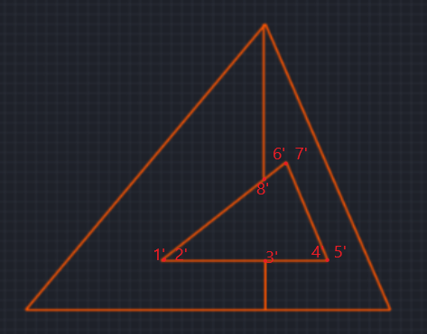
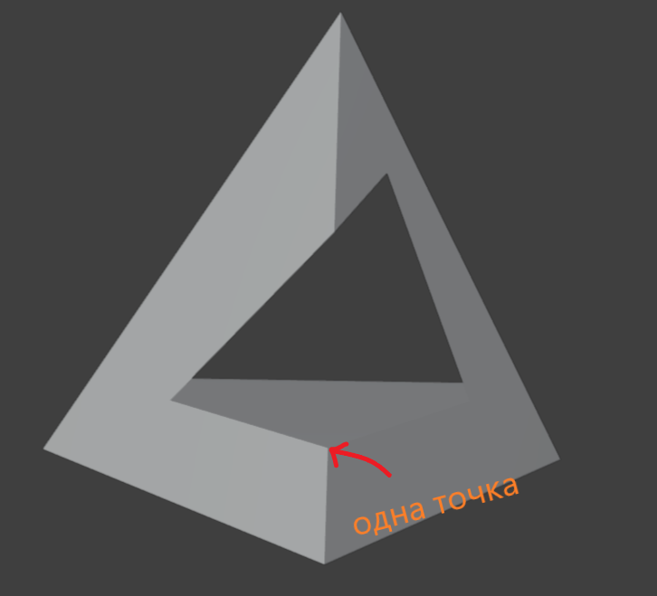
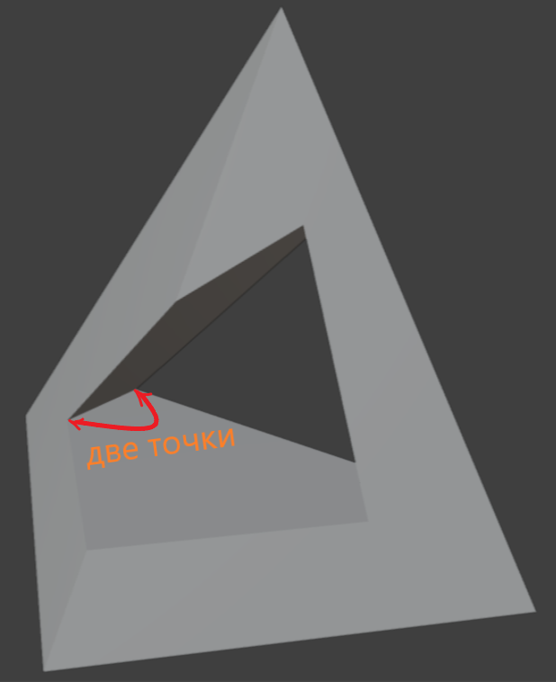
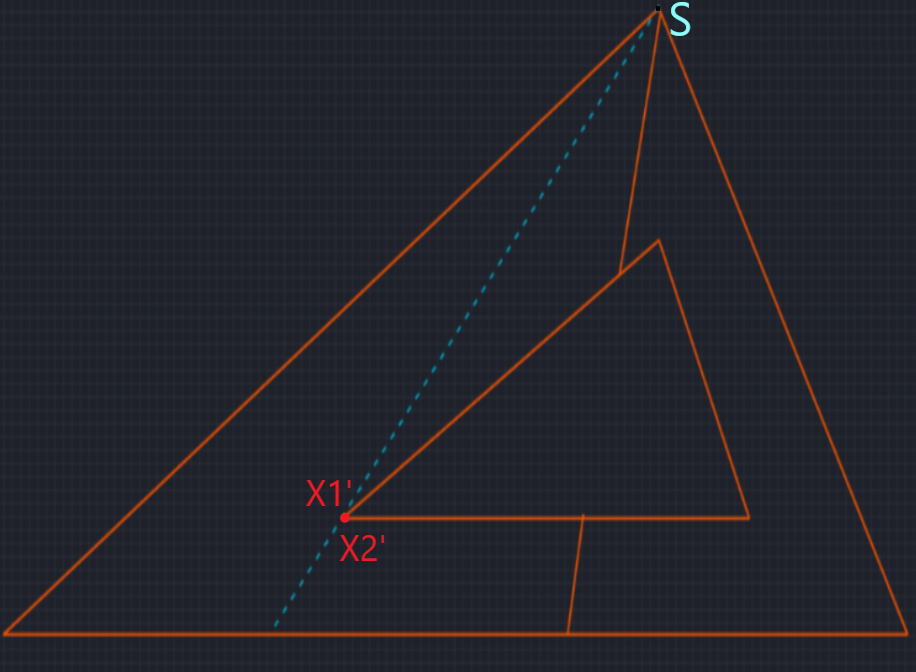
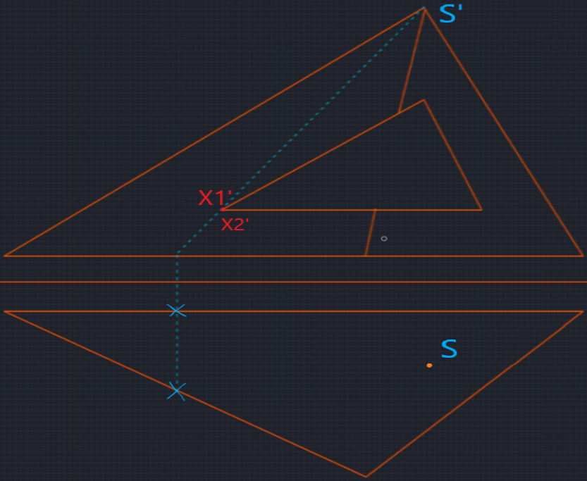
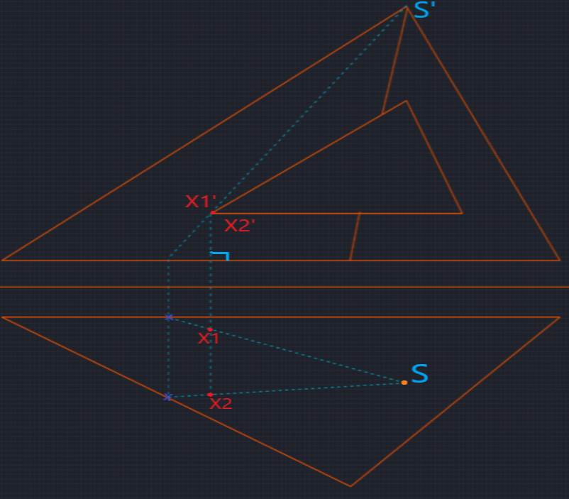
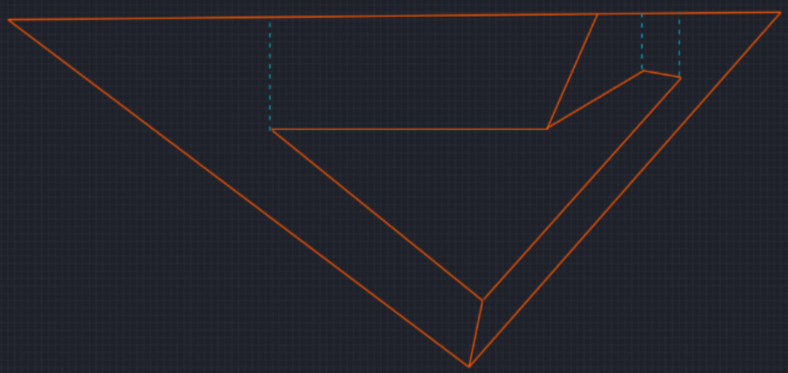

МЕТОД СЕКУЩЕЙ ПЛОСКОСТИ // ПИРАМИДА построение линии пересечения
алгоритм секущей плоскости для n-угольной пирамиды · проекционная геометрия · линии связи и видимость
01
Определение точек пересечения
грани · рёбра
Правило: При пересечении секущей плоскостью двух граней получаем 2 точки. Если плоскость пересекает краевое ребро — 1 точка.
→ Все найденные точки наносятся на проекции (фронтальную и горизонтальную).
→ Все найденные точки наносятся на проекции (фронтальную и горизонтальную).



Обозначение: точки на фронтальной проекции — один штрих (X'), на профильной — три штриха (X‴).
Временные вспомогательные точки обозначаются как t' (фронталь) и t (горизонталь).
Временные вспомогательные точки обозначаются как t' (фронталь) и t (горизонталь).
02
Проецирование точек сечения (метод лучей)
три этапа построения
2.1 — Луч из вершины через точку
Из вершины пирамиды (S') на фронтальной проекции проводим прямую через заданную точку X' (точку выреза на грани) до пересечения с основанием пирамиды.
Отмечаем вспомогательную точку t' на пересечении с основанием (на фронтальной проекции).

2.2 — Перпендикуляр к основанию
Опускаем перпендикуляр из полученной точки t' (фронтальная проекция) к горизонтальной проекции основания.
На пересечении с линиями основания отмечаем точки, фиксирующие положение t на горизонтальной плоскости.

2.3 — Соединение с вершиной и проецирование исходной точки
На горизонтальной проекции соединяем полученную точку t с вершиной S.
Из исходной точки X' (фронталь) опускаем перпендикуляр (линию связи) на горизонтальную плоскость.
Точка пересечения этого перпендикуляра с построенной линией S-t даёт искомую горизонтальную проекцию X точки сечения.

Вспомогательные обозначения: временная точка на фронтальной проекции — t', её горизонтальная проекция — t. Искомая точка выреза на фронтали — X', её горизонтальная проекция — X. Метод позволяет точно построить любую точку сечения на горизонтальной проекции.
03
Построение контура сечения · видимость
анализ связей
Обход контура: Соединяются точки, между которыми есть связь (принадлежность одной грани). Учитывается видимость: видимые участки — сплошная линия, невидимые — штриховая. Аналогично на горизонтальной проекции соединяем точки в том же порядке.

Видимость: отрезок видим, если принадлежит видимой части грани. Невидимые участки показываются штриховой линией (пунктир). На горизонтальной проекции видимость определяется положением относительно очерка пирамиды.
04
Построение третьей проекции (профильной)
проекция на π₃
Завершение: точки переносятся на профильную проекцию линиями связи (горизонтальные линии связи с фронтальной проекции и вертикальные — с горизонтальной). Соединяются в том же порядке, что и на горизонтальной проекции, с учётом видимости.
Третья проекция завершает эпюр: координаты точек переносятся с горизонтальной и фронтальной проекций. Обозначение профильных проекций — три штриха (X‴).
Сводный алгоритм (сечение пирамиды)
1. Анализ
Определить пересекаемые грани/рёбра → количество точек
2.1 → 2.3
Метод лучей (S → t) и проецирование точек X' → X
3. Соединение
Обход контура с учётом видимости
4. Профиль
Построение третьей проекции (π₃)
Обозначения: X' (фронталь), X (горизонталь), X‴ (профиль)
Вспомогательные: t' (фронт.), t (гориз.) — на пересечении луча с основанием
Две грани → 2 точки, ребро → 1 точка